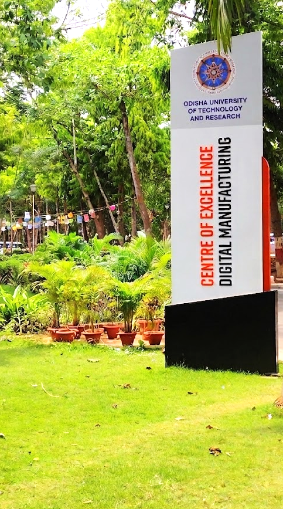

The State Government established the "Odisha University of Technology and Research" located at Bhubaneswar by upgrading the College of Engineering & Technology, Bhubaneswar through the Odisha University of Technology and Research Act, 2021 (known as Odisha Act 17 of 2021). The University starts functioning with effect from 8th October,2021 through Notification No. SDTE-HTE-HTE-I1-0012-2021/4578 dated O8.10.2021 of SD&TE Department, Government of Odisha. The First Statutes 2022 of the University was notified videNotification No. SDTE-HTE-HTE-II-0012-2022/1075 dated 09.02.2023. The University is governed by the Odisha University of Technology and Research Act,2021 and its First Statutes, 2022.
The University is located in the Techno Campus at Kalinga Nagar, Bhubaneswar, about 2.0 km away from Khandagiri-Udayagiri caves. It spreads over 100 acres of green campus with 24x7 Wi-Fi coverage in the whole premises, including hostels. The University is 5 km from the bus stop, 8 km from Biju Patnaik International Airport, and 12 km fromBhubaneswar Railway Station.
The meticulously nurtured learning environment in OUTR is stress free and fear free. It enables and encourages new ideas to flourish. Students are encouraged to persist in their quest for learning and acquire the requisite skills to excel in the present information driven globalised world. Our core aspiration is to provide an Educational Excellence, in that every student makes a positive difference during the time with us. We also strive to provide a caring, scupportive and challenging environment to the students, in which they can grow and flourish to the esteemed heights. The student community drawn from all over the state has grown and will continue to grow in strength and diversity. The dream to make a creative, multidisciplinary institution which delivers quality education, original research and practice, is what drives the academic community here.
The University commits itself to provide the best possible learning environment and facilitate the students to follow their passion.
